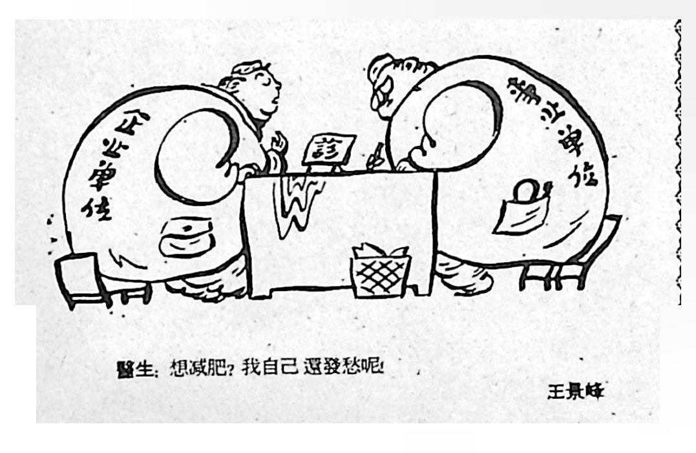

王景峰 《人事》1987年第6期（总第21期），第46页
瘦不下来
Can't Slim Down
- Caption
- 医生：想减肥？我自己还发愁呢！
Doctor: You want to lose weight? I'm worried about that myself! - Text in the drawing
- 企业单位 / 事业单位 / 诊
Enterprise / Public-service unit / Consultation - Description
- An immensely fat patient labeled “enterprise” consults a doctor across the desk — who is just as fat, and labeled “public-service unit.”
- Note
- 事业单位 are state-funded non-commercial institutions (schools, hospitals, research institutes); both kinds of unit were notoriously overstaffed. The title comes from the table of contents.
- Artist
- Wang Jingfeng 王景峰
- Published in
- 《人事》1987年第6期（总第21期）, p. 46
- Themes
- Overstaffing and overlapping agencies

Cite
Wang Jingfeng, “瘦不下来” [Can't Slim Down], Renshi (Personnel) 《人事》, 1987, no. 6, p. 46.